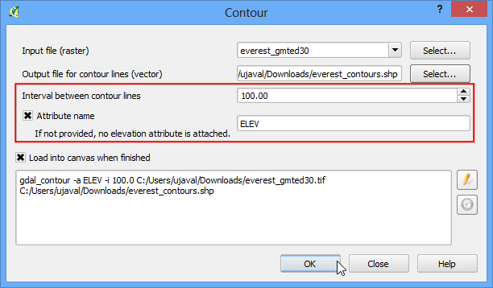

Lavorare con i dati del terrreno
I dati che si riferiscono al terreno o all’elevazione del suolo sono utili in molte analisi realizzate con i sistemi GIS e vengono spesso usati nella stesura di carte e mappe. QGIS possiede delle ottime funzioni residenti per i processi di analisi del territorio. In questa esercitazione faremo i passi necessari per realizzare diversi risultati a partire da dati che riguardano l’elevazione, per esempio, le linee di livello, la pendenza, etc.
Descrizione del compito
L’obiettivo è quello di creare una mappa delle curve di livello e delle forme montuose per l’area che circonda il monte Everest.
Altri aspetti che avremo modo di apprendere nel corso dell’esercizio
Ottenere i dati necessari
Lavoreremo con il dataset GMTED2010 di USGS. Questi dati possono essere scaricati dal sito USGS Earthexplorer. Tenete conto che GMTED (Global Multi-resolution Terrain Elevation Data) è un dataset territoriale planetario ed è la versione più recente del dataset GTOP30.
Vediamo come cercare e scaricare i dati che ci interessano da USGS Earthexplorer.
Portiamoci su USGS Earthexplorer . Nella scheda Search Criteria facciamo una ricerca del luogo chiamato Mt. Everest. Facciamo click sul risultato per individuare il posto.

Nella scheda Data Sets apriamo il gruppo Digital Elevation e, al suo interno, sbarriamo la casella GMTED2010.

Adesso possiamo passare alla scheda Results e vedere le parti del dataset che rispondono positivamente ai criteri di ricerca che abbiamo impostato. Fate click sul pulsante Download Options . A questo punto dovete fare login per accedere al sito. Se non avete un account di accesso potete crearlo.

Selezionate nella opportuna casella l’opzione 30 ARC SEC e fate click su Select Download Option.

Avete appena scaricato un file che si chiama GMTED2010N10E060_300.zip. I dati altimetrici sono distribuiti in diversi formati raster ASC, BIL, GeoTiff, solo per citarne alcuni. QGIS supporta una grande varietà di formati raster <http://www.gdal.org/formats_list.html> mediante la libreria GDAL. I dati di GMTED contenuti in questo file di archivio sono in formato GeoTiff.
For convenience, you can download a copy of the data directly from below.
GMTED2010N10E060_300.zip
Fonte Dati: [GMTED2010]
Procedimento
Aprite e trovate il file zip che avete appena scaricato.

Troverete molti file diversi, che generati da diversi algoritmi. Nell’ambito di questa esercitazione useremo il file chiamato 10n060e_20101117_gmted_mea300.tif.

Nella finestra principale di QGIS sono ora mostrati i dati del terreno. Ciascun pixel nei raster territoriali rappresenta l’elevazione media misurata in metri in quel punto.
I pixel scuri indicano le aree con valori di elevazione bassi mentre i pixel chiari indicano le aree con alti valori di elevazione.

Vediamo adesso di individuare la nostra area di interesse. Consultando Wikipedia, possiamo verificare che le coordinate della nostra area di interesse - Mt. Everest - sono situate alle coordinate 27.9881° N, 86.9253° E. Notate, incidentalmente, che QGIS usa le coordinate in formato X,Y, pertanto le coordinate sono, rispettivamente, prima la Longitudine (X) e poi la latitudine (Y). Copiate questa cifra 86.9253,27.9881 nella casella che si trova alla base della finestra principale di QGIS, lì dove c’è scritto Coordinata, poi premete il tasto Enter della tastiera. Il punto di vista sarà centrato sul punto definito da queste coordinate. Per ingrandire, inserite 1:1000000 nel campo Scala e poi premete di nuovo Enter. Vedrete ingrandirsi la vista esattamente sull’area che circonda l’Himalaya.

- We will now crop the raster to this area of interest. Select the Clipper
tool from .
Nota
Il menu Raster in QGIS viene installato da un plugin interno che si chiama GdalTools. Nel caso qualcuno non veda il menu Raster si tratterà di attivare il plugin GdalTools da . Per ulteriori dettagli sui plugin consultare la pagina Usare i Plugins.

Nella finestra Clipper date al vostro file di output il nome di everest_gmted30.tif. Attivate poi, nella scheda Modo di clip, la checkbox Estensione.

Lasciando la finestra Clipper aperta - e, ove necessario, spostandola per toglierla di mezzo - portatevi sulla finestra principale di QGIS. Tenete premuto il tasto sinistro del mouse e disegnate un rettangolo in modo da coprire l’intera finestra.

Adesso, tornati nella finestra Clipper, troverete già automaticamente riempite le coordinate che avete appena definito con la vostra selezione rettangolare. Assicuratevi che la finestra Carica nella mappa quando finito sia barrata. Fate click su OK.

Una volta che il processo è finito, vedrete un nuovo layer caricato in QGIS. Questo layer copre esclusivamente l’area intorno al Monte Everest. Adesso siamo pronti a generare le curve di livello. Selezionate lo strumento per le curve di livello da .

Nella finestra di dialogo Curve di livello selezionate everest_gmted30 come file di Input. Chiamiamo File di output per le curve di livello con il nome di everest_countours.shp. Ci proponiamo di generare delle curve di livello con intervalli di 100 metri, pertanto mettiamo 100 come Intervallo tra curve di livello.
Selezionate inoltre la casella di spunta Nome Attributo in modo che il valore dell’altezza sia memorizzato come attributo per ciascuna linea di livello. Click su OK.

Una volta terminato il processo, vedrete le curve di livello nella finestra principale. Ciascuna linea in questa immagine rappresenta una data misura dell’altezza. Tutti i punti che giacciono sulla stessa curva di livello dovrebbero essere alla stessa altezza. Tanto più vicine sono le curve di livello, tanto più ripidi sono i pendii. Vediamo le linee di livello in maggior dettaglio. Click con il tasto destro del mouse sul layer delle linee di livello e poi selezionate Apri tabella degli attributi.

Come vedete ciascuna geometria lineare dispone di un attributo chiamato ELEV. Esso indica l’altezza in metri che ciascuna linea rappresenta. Facendo click un paio di volte sull’intestazione della colonna ELEV ordineremo i dati dell’altezza in senso discendente. In questo modo troveremo facilmente la linea che descrive il punto più alto dei nostri dati, cioè la vetta del Monte Everest.

Selezioniamo la riga più in alto, e facciamo click sul pulsante Zoom mappa alle righe selezionate.

Portiamoci sulla finestra principale di QGIS. Vedrete la curva di livello selezionata colorata di giallo. Questa è l’area di massima altezza all’interno dei nostri dati.

Ora ricaviamo una carta dei rilievi 3D dal nostro raster. Selezionate .

Nella finestra di dialogo DEM (Analisi geomorfologica) scegliete everest_gmted30 come file di input. Chiamate il File di output con il nome di everest_hillshade.tif. Scegliete Ombreggiatura come Modalità. Lasciate le opzioni rimanenti così come sono. E assicuratevi che l’opzione Carica sulla mappa quando finito sia attivata. Click su OK.

Una volta che il processo è terminato, vedrete un nuovo raster caricato nella finestra principale di QGIS. Visto che probabilmente avete usato lo zoom nelle regioni intorno all’Everest, fate click con il tasto destro sul layer everest_hillshade e scegliete la voce Zoom all’estensione del layer.

- Now you will see the full extent of the hillshade raster.

Potrete infine visualizzare il vostro layer delle curve di livello e verificare la validità del vostro lavoro esportandolo come KML e visualizzandolo in Google Earth. Fate click con il tasto destro sul layer delle curve di livello e selezionate Salva con nome....

Selezionate Keyhole Markup Language [KML] nella casella Formato. Salvate il vostro output come contours.kml e fate click su OK.

Cercate il file di output nel supporto di memoria in cui l’avete salvato e fateci click sopra due volte per aprire Google Earth.